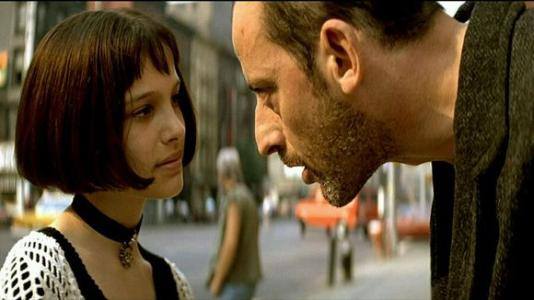
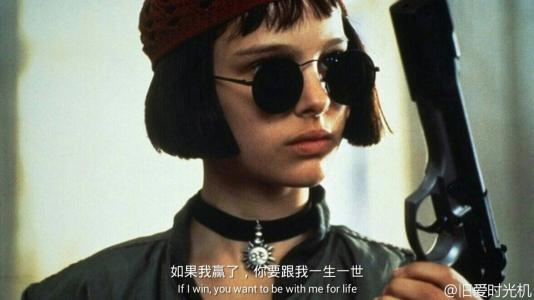
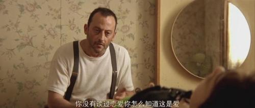
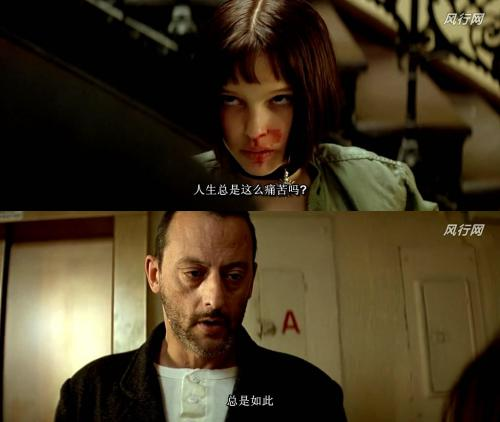

昨天看了《怦然心动》，满满的温馨。在写这篇文章时，又回顾了两遍。 这部电影和别的电影叙事手法不一样，它是通过男女主角的内心独白相互切换来向观众展示情节的。这样的手法不会让观影者感到枯燥无趣，可以及时的了解到主角双方的想法。虽然是一部文艺爱情片，但影片中没有一系列狗血的事件——没有大雨中的撕心裂肺、没有堕胎、没有死别......
在《怦然心动》里满满的是孩童期间的纯真和成长，他给我的感觉特别真实，仿佛触手可及，仿佛那就是你我的童年
在影片中，有很多让我怦然心动的时刻。我影响最深的是梧桐树的这个情节。社区里有颗高大的梧桐树，女孩从小就喜欢坐在高高的树上看远处的风景，但有一天，因为这里要新建一座房子，需要砍掉梧桐树，小女孩坐在树上牢牢的抓住树干，努力又无助地哀求着不要砍掉这颗树，我觉的这棵树就是她的信仰、是她的精神依靠。她最终还是没能守住自己的心爱的梧桐树被爸爸劝了下来，因为爸爸说“什么样的景色都没我女儿的安全重要”。
梧桐树被砍掉后，小女孩为此哭了整整两个星期，她一直闷闷不乐，她不开心有两个原因，其一是她没有守护住她心爱的梧桐树了，其二是当她在与施工方抗争不砍树时，求助于小男主，但小男主并不想因此旷课就没有搭理她。 有天小女孩仍然沉浸在失去树的伤感中时，爸爸问她感觉怎么样，她强装无所谓的说道“不过是棵树”，当爸爸拿下画布的那刻，我很“矫情”的落了泪，爸爸为她画了那颗梧桐树，我觉得小女孩的精神依靠又回来了，爸爸说“我希望你永远都能记住，在树上的感觉”。
我也喜欢在高高的地方看远处的风景，可能是这份感同身受打动了我；可能是小女孩用力守护自己心爱之物的感情打动了我；或许又可能是她明明很在乎树被砍了却要强装无所谓的样子，这点和我很像，所以打动了我，总之我看了很动容。
影片中还讲到了小女孩送爱心鸡蛋给男孩却被偷偷扔掉。 起因是男孩家里收到鸡蛋后，质疑鸡蛋的来源，便让男孩去问问女孩，但男孩从小就避女孩远远的，为了避免跟女孩正面接触，他和他的朋友偷偷去探查了女孩家的鸡舍，感觉“脏乱差”，并向家里人说了，家人怕得“沙门氏菌”便表示，让男孩把鸡蛋退还给女孩，借口说“不爱吃鸡蛋”，但男孩由于不愿与女孩沟通，又不想因退回鸡蛋而伤了她的心，就开始瞒着家里偷偷把鸡蛋扔掉。但女孩并不知情，仍然常常准时来送鸡蛋。
直到有天被女孩撞见扔鸡蛋。女孩非常生气，此后看见男孩就回避他，男孩因心怀愧疚，对女孩越来越关注，也开始试着去了解她。此时的女孩因男孩说她家院子脏乱差，便开始修整自家前院，男孩的外公也常常来帮助她。同时外公还劝导男孩“...做人要诚实，有时候开始时忍受一点不舒服，能为以后省去很多麻烦”。于是男孩便去向女孩道歉。
 在鸡蛋事件中，慢慢的刻画出男孩父亲的刻薄和易猜疑、小气的性格，男孩的父亲，是一个虚伪目空一切的人，自私不考虑他人感受，有着令人讨厌的性格。不过可恨之人必有可怜之处，他其实只是跟自己过不去，对自己现有状态的一种不满而将情绪转移到他人身上，他也只是个懦夫，用女孩的话来说“他外表干净整洁，不过表面之下的东西都腐烂了”。有这样的父亲，男孩又怎么会感受到什么才是真正的美呢？庆幸的是，他的外公后来和他们住到了一起，有外祖父的开导，慢慢的让男孩感悟人生真正的意义所在。最终发现了女孩的美丽与善良。 与此同时，小女孩开始领悟“整体表现超越部分叠加”，她开始理性的思考，尝试着分析人们整体表现是否高于部分的叠加，得出很多人的整体表现都是逊于部分叠加的；孩童时期的女孩一直坚信男孩一定是整体大于部分之和的人。但随着这个女孩的成长，她渐渐体悟到了亲情、家庭、成就、情感等等，她的眼里不再只有布莱斯，她的注意也开始转移，她开始质疑当初自己的想法：男孩真的是整体大于部分的人吗，也许这只是当初自己的希望，而现实的男孩却那么的缺少内涵。她开始反思自我，反思对男孩的认知是否正确，男孩是否是高于部分叠加的，他的道歉是真心的，还是只是为了让他自己舒心；她开始对男孩失望；她开始追寻自我。
但是，就在女孩与布男孩渐行渐远的时候，男孩突然对女孩也怦然心动了，他为女孩家庭的温馨氛围所感染，他意识到女孩如此与众不同：她如此热爱生活、个性独立，就连平日在他眼中被当做愚蠢行为的爬树、养鸡等，也开始出现了不同的绚丽色彩。此时，男孩才深深体会到了外公的话：“有些人浅薄，有些人金玉其外败絮其中，但总有一天，你会遇到个如彩虹般绚丽的人，她让你觉得以前遇过的所有是浮云。” 男孩为了让生气的女孩开心，为女孩种下了一颗梧桐树苗，重获女孩的芳心。喜欢一个人就去做她喜欢的事情吧，就像那句俗话：“我喜欢火龙果，即使你给我一箱芒果，我也不会喜欢。”一旦确定喜欢一个人那就大胆的去追求吧，不要畏手畏脚。 电影中还有很多让我动容的地方，女孩母亲饭桌上抱怨生活导致父亲发飙、女孩去看望自己的弱智叔叔、邻里两家人共度晚餐、学校拍卖男孩的活动、男孩为得女孩芳心种下了梧桐树苗。 通篇来说，我觉得小女孩真的很赞，小小年纪就能做出许多对人生和爱情的思考。想想自己小时候在干嘛，遇见喜欢的人既没有大胆地追，也没有审视自己喜欢的人到底值不值得喜欢。虽然“吾日三省吾身”从小听到大，但实际生活中更本就没有将这句话进行实践运用。对自我的反省意识很欠缺。 其实如果要用通俗简洁的语言来讲这部影片的剧情，就是：女孩对男孩一见钟情并开始疯狂追求（“追求”其实就是小孩子之间喜欢缠着一起玩），男孩躲避，发生小插曲，女孩放弃喜欢男孩与此同时男孩开始关注女孩，男孩喜欢上女孩，重获得女孩的芳心。虽然这样讲，会感觉剧情很简单，很一般，但这部影片还是很值得一看的。 一连看了两遍《怦然心动》，真的是怦然心动。一对小孩，一棵树，特别简单的故事，讲得荡气回肠。我感触最深的一点是：女生十来岁就有超脱的自省意识，审视自己爱的人到底值不值得爱。一旦触及她的自尊，立刻决定放弃这个男生。我们文化里的“爱”，似乎都要低到尘埃里，舍弃自尊才叫爱，犯贱当真爱。——柏邦妮 感谢导演——罗伯·莱纳。 影片的虽然结束了，但又觉得故事又才刚刚开始。
A painting is more than the sum of its parts. A cow by itself is just a cow. A meadow by itself is just grass, flowers. And the sun peeking through the trees is just a beam of light. But you put them all together and it can be magic.
一幅画不是众多物件简单拼凑而成的。牛只是一头牛，草地也只有青草和鲜花，而穿过树枝的阳光也仅仅只是一束光，但如果将它们放到一起，就会产生魔一般的魅力。
The higher I got, the more amazed I was by the view.
Some days the sunsets would be purple and pink. And some days they were a blazing orange setting fire to the clouds on the horizon. It was during one of those sunsets that my father's idea of the whole being greater than the sum of its parts moved from my head to my heart.
有时起初的隐忍可以避免一路的疼痛。
Some of us get dipped in flat, some in satin, some in gloss. But every once in a while you find someone who's iridescent, and when you do, nothing will ever compare.
有些人沦为平庸浅薄，金玉其外，而败絮其中。可不经意间，有一天你会遇到一个彩虹般绚丽的人，从此以后，其他人就不过是匆匆浮云。
One’s character is set at an early age. I'd hate to see you swim out so far you can't swim back.
从小看到老，我可不愿看到你做边城浪子回不了头。
There is no assumption that you cannot blame them for what they have not done.
没发生的事不能假设，你不能因为他们没有做过的事而谴责他们。
